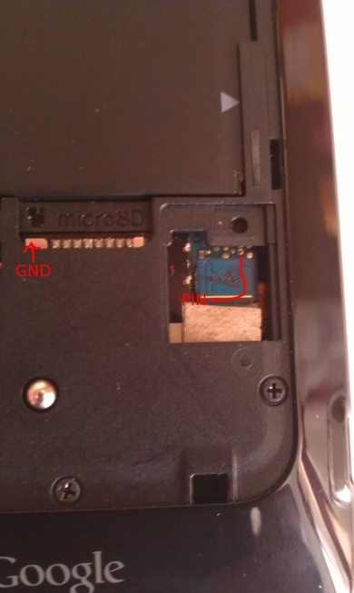

S-OFF HTC Velocity 4G (HTC
Holiday)
С
помощью этого способа Мы сможем осуществить S-OFF на HTC Holiday.
Требования:
- Смартфон
HTC Holiday на базе официальной прошивки GB или ICS
- Разблокированный
загрузчик (Через HTC Dev)
- Наличие
кастомного рекавери (CWM)
- Наличие
рут-прав
- КОМПЬЮТЕР НА БАЗЕ LINUX
- Чистая
карта памяти (Рекомендуется 1-2 GB)
Подготовительный этап:
- Если
на Вашем компьютере установлена OS Windows, то сносим её (или как-то по
другому) и устанавливаем OS Linux Ubuntu Данный этап
обязательный, т.к программа для получения S-OFF написана под Linux
- Заряжаем
телефон (хотя бы до 70%, но рекомендую полностью)
- На
самом телефоне включаем отладку по USB (в настройках разработчика), а
также разрешаем установку приложений из "Неизвестных источников"
- Отключаем
быструю загрузку в настройках аппарата
- Вставляем
пустую карту памяти в аппарат
- Находим кусок провода\проволоки
длиной не менее трех сантиметров. (Возможно
использование разогнутой скрепки)
Приступаем к самому процессу:
2)
Подключаем телефон к компьютеру при помощи USB кабеля. При
выборе типа подключения выбираем "Только зарядка"
3) Запускаем
терминал Linux в папке с утилитой для S-OFF (См. шаг 1)
4) Вводим в
терминал
- chmod 755 ControlBear adb fastboot
5)
После удачного
выставления прав файлов в пункте 4, переходим к запуску утилиты
Вводим
в окно терминала, в папке со скачанной программе, команду:
sudo ./ControlBear
6) Следуем инструкциям на экране. НЕ НАЖИМАЕМ НИЧЕГО НА СМАРТФОНЕ ВО ВРЕМЯ
ВЫПОЛНЕНИЯ УТИЛИТЫ!!
После
того, как увидели надпись в окне программы do
wire-trick now, переходим к следующему пункту
7)
После того, как выполнены
условия пункта 6, приступаем к следующему:
Берём
кусок нашей проволоки (или скрепки) и замыкаем указанные на фото ниже
контакты на 2 секунды (если так не получается, пробуем замкнуть
контакты кратковременно, разомкнуть и через 1.5 - 2 секунда замкнуть
снова)
Ни
в коем не прикасаемся вторым концом провода к
себе. иначе можем статикой убить девайс!

8) Телефон перезагрузится несколько
раз.
На
экране в ControlBear будут идти радостные надписи на английском, но
нужно будет подождать полного завершения операции. ControlBear сообщит
об этом.
При
этом ваш загрузчик заблокируется и нужно будет его заново
разблокировать.